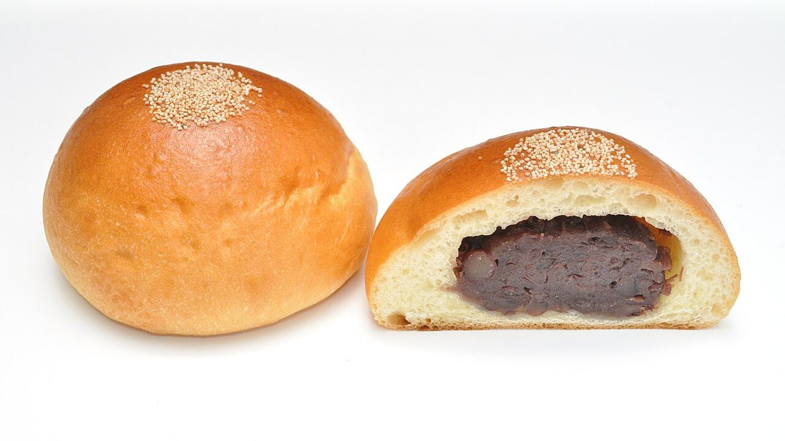
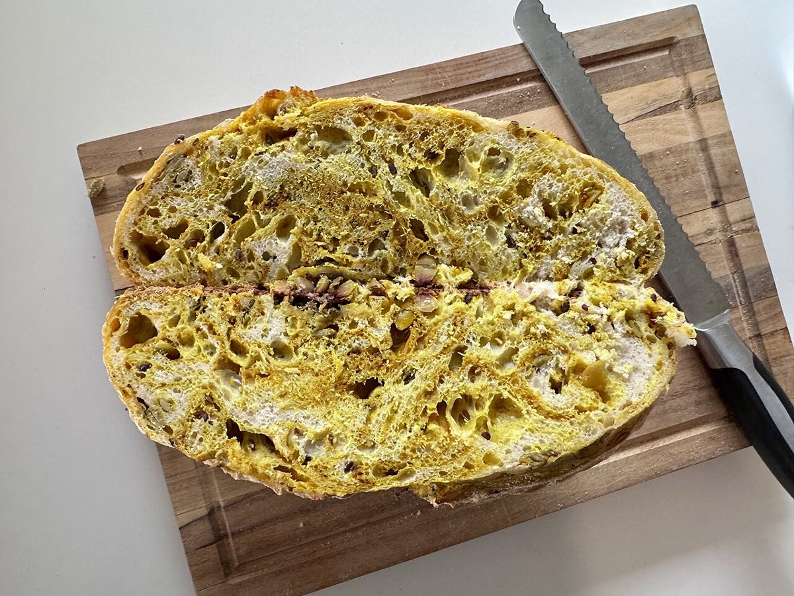

パン
BREAD
Instagramでは「湯捏ね食パン」のご予約案内が出ています。ほかの品ぞろえ・価格は準備中です。







東松島市矢本 / 小さなパン屋
黒い建物の小さなパン屋で、その日のパンがなくなるまで。
掲載の写真はフリー素材のイメージで、パン工房 コナリナの実際の店内・商品ではありません。
BREAD
Instagramでは「湯捏ね食パン」のご予約案内が出ています。ほかの品ぞろえ・価格は準備中です。


VOICE
以下は制作側が作成したイメージ例で、実在のお客様の声ではありません。
黒い建物が目印で、迷わず着きました。小さなお店ですが、パンがきれいに並んでいました。
午前中に行ったので、好きなパンを選べました。また買いに来たいです。
食パンの予約ができるのが助かります。ふんわりしていて朝ごはんが楽しみになりました。
ABOUT
パン工房 コナリナは、宮城県東松島市矢本にある小さなパン屋です。Instagramのプロフィールには「東松島市の小さなパン屋です。黒い建物が目印です。」とあります。
営業時間は10:00〜17:00で、パンがなくなり次第終了とのことです(Instagramの記載)。開業の経緯や店名の意味は公開情報では確認できていないため、ここでは触れていません。
ACCESS
| 住所 | 〒981-0503 宮城県東松島市矢本大溜229-3-3 |
|---|---|
| 電話 | 準備中 |
| 営業時間 | 10:00〜17:00(パンなくなり次第終了 / Instagram記載。最新情報はInstagramでご確認ください) |
| 定休日 | 準備中 |
| @conalina5767 |